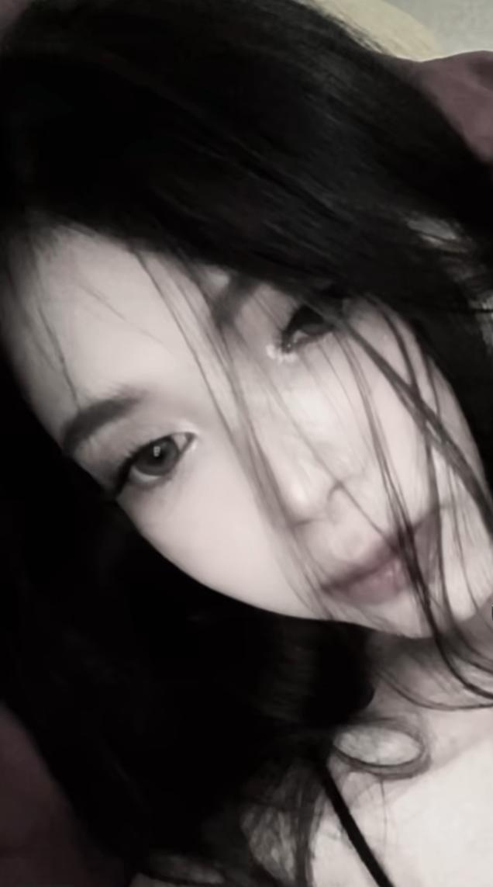

LIAA KIW KIWWWW, HEHEHE LIAA IPUL MAU MINTA MAAFF LEWAT INI HIHI. Ipul cuma mau minta maaf buat semua kejadian kemarin. Mungkin cara ipul, sikap ipul,atau kata-kata ipul bikin lia kecewa dan kepikiran. Jujur ipul nyesel banget kalau akhirnya hubungan kita jadi renggang gara-gara gini. Mungkin ga langsung bikin semuanya balik kaya dulu, Tapi ipul beneran tulus minta maaf. Semoga lia bisa pelan-pelan maafin ipull yahh. Ipul juga bakal coba jadi lebih baik lagi kedepannya. makasih udah pernah ada dan sabar sejauh ini.
Semoga lia seneng dan maafin ipull hehehe Berang berang liat kayuu Aduh neng lia pokonya ailapyu